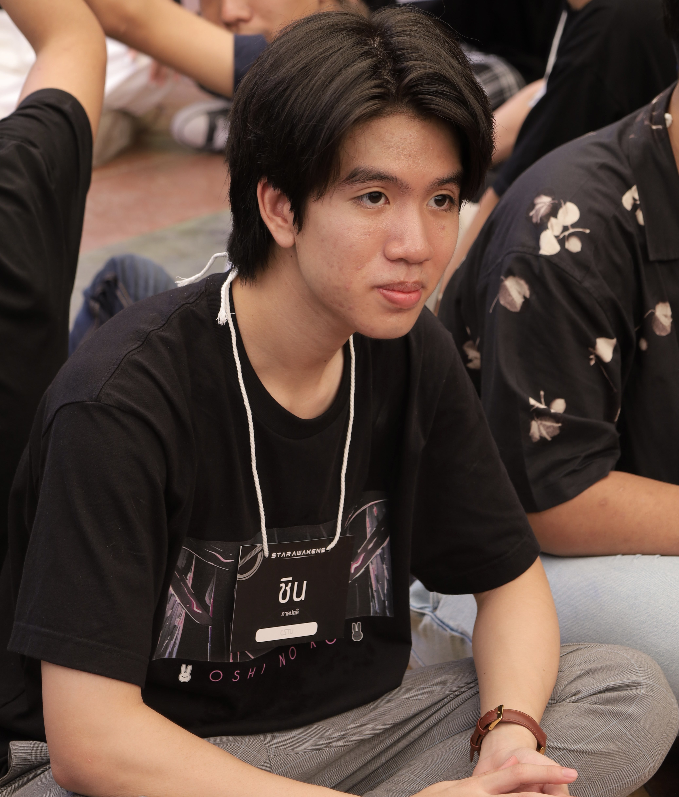

- My CSTU Story -

ก่อนอื่นผมคงต้องเล่าว่า ผมได้มีโอกาสมาที่มหาวิทยาลัยธรรมศาสตร์ตั้งแต่ช่วงมัธยมปลายหลายครั้งครับ ซึ่งผมก็ชื่นชอบบรรยากาศโดยรอบ
โดยเฉพาะต้นไม้ที่มีให้เห็นทุกที่ เป็นส่วนช่วยเพิ่มบรรยากาศการเรียนรู้ของผม
และเมื่อได้มาใช้ชีวิตอยู่ที่มหาวิทยาลัยเป็นเวลา เกือบ 1 เดือนได้ทำความรู้จักสถานที่ต่าง ๆ ทำกิจกรรม เล่นแบตมินตัน ปั่นจักรยาน ในมหาวิทยาลัย
ก็ทำให้ยิ่งชอบมากกว่าเดิมครับ

สิ่งที่ผมประทับใจเกี่ยวกับ CSTU คือความเป็นกันเอง ของคนในสาขาครับ ไม่ว่าจะเป็นเพื่อน ๆ พี่ ๆ รวมถึงพี่พนักงาน และ อาจารย์ทุกคนครับ ประกอบกับเรื่องหลักสูตรของที่นี่ ที่ครอบคลุมทุกด้าน มีวิชาโท หากอยากศึกษาใน Field อื่น ๆ ครับ
กิจกรรมต่าง ๆ ในวัน FirstMeet CSTU มีความสร้างสรรค์ ได้ทำความรู้จักกันผ่านกิจกรรมที่ พี่ ๆ จัดขึ้น สนุกมากครับ กับของว่าง อาหารกลางวัน ของสาขาเลี้ยงดีมากครับ555 (ทำให้จากนี้ไปก็อยากเข้าร่วมกิจกรรมสาขาครับ)
| MyPicture | ID : 6709616483 |
|---|---|
|  |
Visit CSTU at: Thammasat University Rangsit Campus, 99 Moo 18 Klong Nueng, Klong Luang, Pathumthani 12121 Thailand |
| Daily Necessities | Video |
|